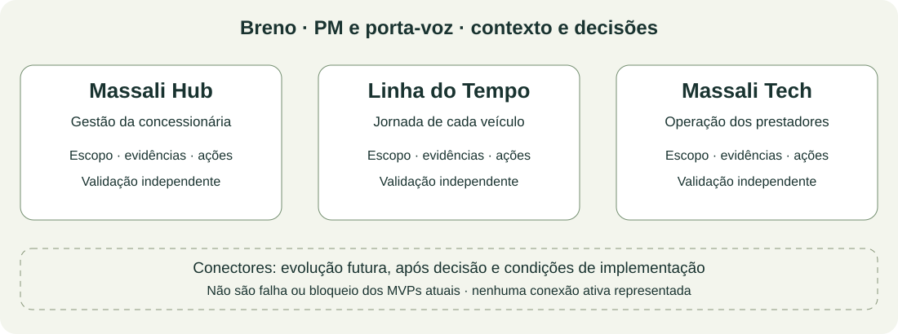

Massali: três frentes, um contexto comum
Hub, Linha do Tempo e Tech, cada um com seu projeto organizado. Avançar uma coisa por vez, com evidências e decisões claras.
Massali Hub
Dar à concessionária uma visão clara dos seus veículos, promessas de entrega, responsáveis e pendências, dentro do seu próprio contexto.
Contexto, evidências e ações →Jornada de cada veículoLinha do Tempo
Organizar a sequência de acontecimentos de cada veículo, com etapas, responsáveis, prazos, evidências e conferência antes da entrega.
Contexto, evidências e ações →Operação dos prestadoresMassali Tech
Organizar a solicitação, confirmação, distribuição e execução dos serviços, com evidências por item e regras comerciais e financeiras explícitas.
Contexto, evidências e ações →Onde estamos e como vamos trabalhar

Separar as frentes organiza escopo, comunicação e validação. Não determina três aplicações, três bancos ou três repositórios. Essa arquitetura será decidida quando necessária.
Breno é o PM e porta-voz: mantém a visão de conjunto e traduz o contexto para cada público. João responde pela avaliação técnica e pelo desenvolvimento em seu escopo. Negócio e operação validam regras e aceite.
Decisões e consulta histórica
Ler a decisão de 01/11 e a forma de acompanhamento
Consultar a reserva de conectores futuros
Biblioteca histórica: estudo integrado, mapas e plano preliminar de 31/10
O estudo integrado preserva a visão anterior. Suas dependências não devem ser reaplicadas como bloqueios automáticos às frentes atuais.